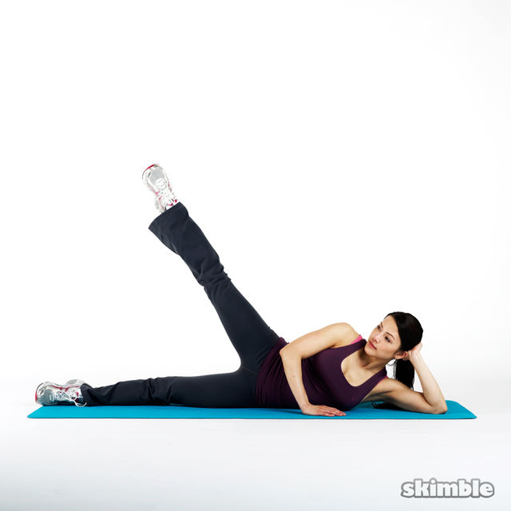
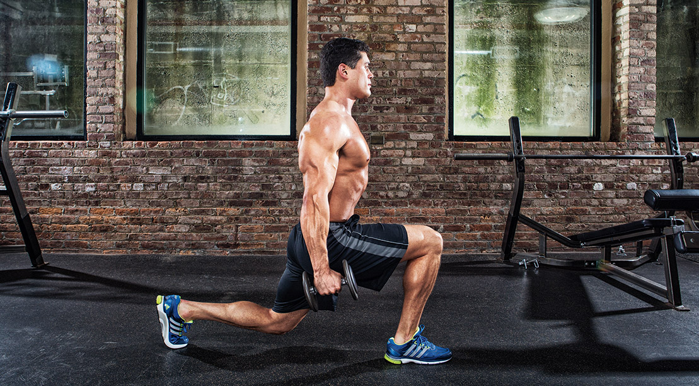

LOWER BODY
Exercise 1: Jumping Jacks
Jumping jacks are a calisthenics exercise to warm up and improve
endurance.
- Stand up straight, arms at sides, feet shoulder-width apart.
- Jump and extend arms overhead.
- Extend legs outward as you jump.
- Return to starting position.
- Repeat.
Exercise 2: Squats
Squats strengthen hips, glutes, quads, hamstrings, and improve posture.
- Stand with feet wider than hip-width, toes forward.
- Bend knees, drive hips back, and open knees slightly.
- Lower into a seated position, chest up.
- Go as low as parallel to the floor.
- Press through heels to return to standing.
Exercise 3: Side-Lying Left Leg Lift
This move targets the hip abductors, glutes, and core for lower body
strength and control.
- Lie on your right side, legs extended and stacked.
- Support head and brace with your left hand.
- Raise left leg slowly, keeping hips stacked.
- Lower gently to starting position.
- Repeat 10–12 times, then switch sides.
Exercise 4: Side-Lying Right Leg Lift

Activates hip abductors and stabilizing muscles to support knee and hip
mobility.
- Lie on your left side, legs extended and stacked.
- Support head with left arm, right hand on hip or floor.
- Lift right leg slowly and pause at the top.
- Lower gently and repeat.
- Do 10–12 reps, then switch sides.
Exercise 5: Dumbbell Lunge

Strengthens glutes, hamstrings, and core. Builds unilateral leg power
and balance.
- Stand with dumbbells in each hand, arms at sides.
- Step forward with right leg into a lunge.
- Push through right heel to return to start.
- Alternate legs or repeat on one side before switching.
- Do 5–7 reps per leg.
Exercise 6: Bulgarian Split Squat
Targets quads, glutes, and core while improving balance and flexibility.
- Place rear foot on a bench, hold a dumbbell at chest level.
- Lower into a lunge, keeping spine tall and hips square.
- Push through front heel to return to start.
- Repeat for 7–10 reps per leg.